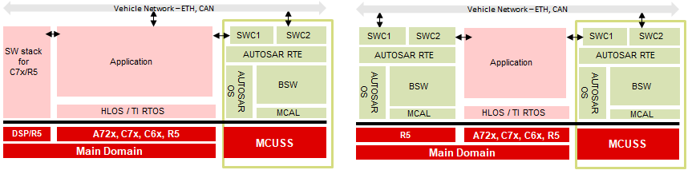

Introduction
The MCUSW do not provide Mcu and Port MCAL drivers, this document details on techniques that could be used to integrate MCAL modules into an AUTOSAR stack with out Mcu and Port modules.
The techniques details below can also be applied for DRA80X class of devices.
Device Architecture
- As show above 3 pimary domains, Wake-up (WKUP), MCU & Main
Wake-up
Device Management Security Controller (DMSC) provides
- Power / Clock Management
- Resource Management
- Security Management
- Other processing cores requests for resource, services to DMSC
MCU Domain
- Dual Core R5F / lock step
- Expected to host AUTOSAR/control SW
Main Domain
- Multiple Compute cores (R5F’s, A72’s, C66x’s, C7x’s)
- R5F's Expected to host AUTOSAR/Other SW functionalities
Back To Top
Device Architecture DMSC
- Each Compute core (CPU’s), before accessing / using a resource
- Request DMSC for required resources
- Request DMSC to setup required clock frequencies (for required peripherals)
- Typically done at start up
- DMSC hosts firmware, that provide these services
- Firmware is provided by TI
- SCI Client is hosted on other compute cores (MCU R5F, Main Domain R5F, A72, etc…)
- SCI Client API’s used to request these DMSC services
- DMSC Firmware
- Is a library hosted on DMSC
- Firmware loaded by Secondary Boot Loader (SBL)
- Can be used in systems upto ASIL D
- SCI Client SW
- Is Interface library that provides API’s to request DMSC for a specific operation
- Is hosted on local cores that requires services of DMSC
- Can be used in systems upto ASIL D
Back To Top
AUTOSAR Mcu & Port Primary functionality

- AUTOSAR / MCAL
- Can be hosted on MCU R5F and/or MAIN Domain R5F
- Mcu Primarily responsible for
- Reset of Device (SoC)
- Reset of RAM
- Configure Clock to peripherals, CPU’s
- Port Primarily responsible for
- De multiplexing a PIN for required functionality
- Setup direction (in/out), enable pullup/pulldowns, etc…
Back To Top
AUTOSAR Mapping Mcu Functionality
Configure Clocks
- Jacinto 7 Class of devices has multiple level of clock multipliers / dividers (PLLs)
- These PLLs are expected to be programmed and controller by DMSC
- Clocks to CPU/Compute cores
- Is to be done at start up (by secondary boot loaders - SBL)
- Configured by DMSC Firmware, request raised by SBL via SciClient
- Not expected to change until next power cycle
Clocks to peripherals
- Configured by DMSC Firmware
- Request raised by a SCI Client API on local core
- Typically done at start up
- Not expected to change until next power cycle
Clock Dividers within a peripheral
- MCAL configurator allows integrators to select/specify peripheral clock dividers (if any)
SCI Client
- Examples applications provided in SDK/PDK/MCAL demonstrate use of Sci Client API’s
- TI SBL demonstrate configuring peripheral clocks (among others)
Reset of Device (SoC)
- Sci Client API’s could be used to perform warm reset
- Alternately, power-on reset can done in collaboration with external PMIC (Power Management Integrated Chip)
- Achieves by driving MCU Error pin on the device, which would trigger PMIC to reset the device
- CSL API’s provided to configure/use ERROR Pin of Jacinto 7 device
Reset of RAM
- Is a shared resource for all compute cores
- Isolation / Freedom From Interference is achieved by
- Carving out dedicated area to each compute core
- Enabling firewall to allow access to carved out section
- Owned sections could be reset by CPU / DMA
Recommended
- Configure peripheral clock in Secondary Boot Loader or AUTOSAR start up code
Back To Top
AUTOSAR Mapping Port Functionality
De Muxing pin for a required functionality
- Jacinto 7 Class of devices has multiple pins that enable interface to external chips/logics
- Some of the pins can support more than 1 functionality (e.g. SPI Master-Out-Slave-In, can also act as Pwm output pin)
- Some of the peripheral IO could be routed to more than 1 pin (only 1 to be active at a time)
TI provides a pin-mux
- Cloud Tool Link
- A cloud based tool, allows GUI based selection of PINs required functionality, configurations per pin
- Generate simple C code / functions that could be invoked to configure the PINs
Multiple compute core requires to access device PINs
- A single register could control multiple pins functionality
- There could be instances where a single register might require access from multiple compute core
Recommended
- One processing entity performs PIN de-mux (such as SBL, AUTOSAR start up code)
Back To Top
Reach to TI - in case of questions
Document Revision History
| Revision | Date | Author | Description | Status |
| 0.1 | 03 Feb 2020 | Sujith S | Converted from PPT | Pending Review |
| 0.2 | 05 Feb 2020 | Sujith S | Addressed Review comments | Approved |
 1.8.14
1.8.14